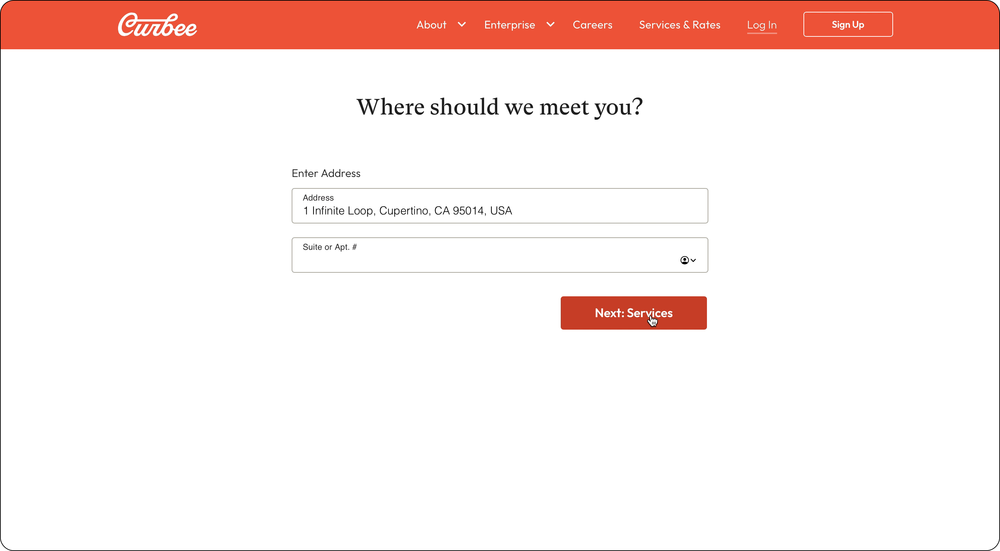
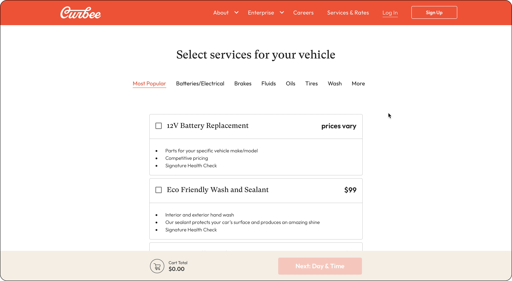
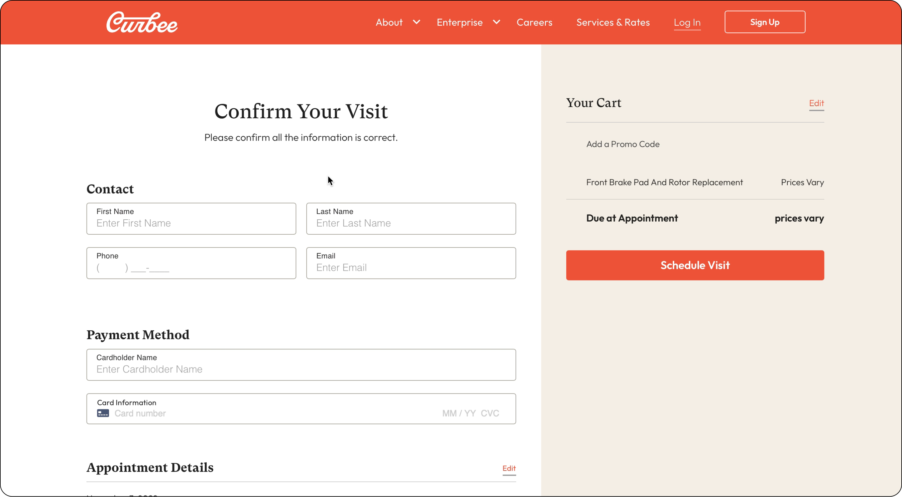
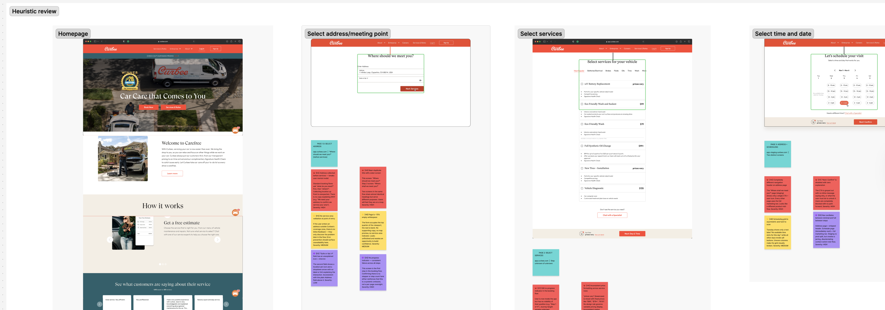
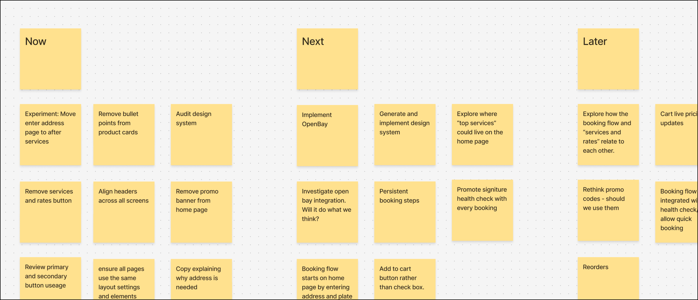
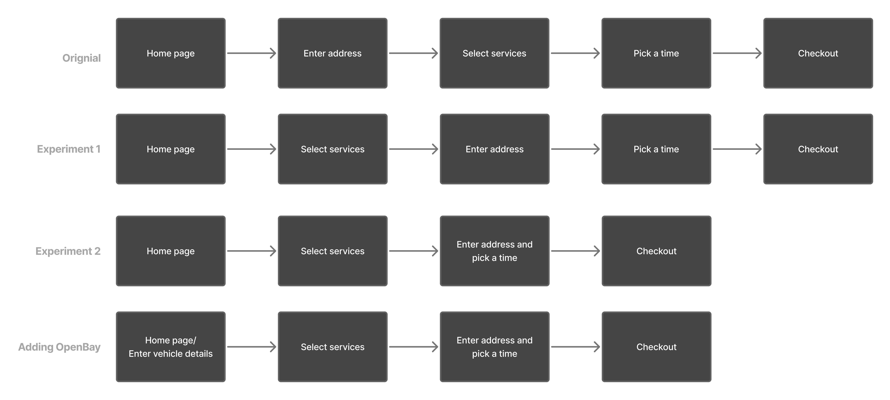
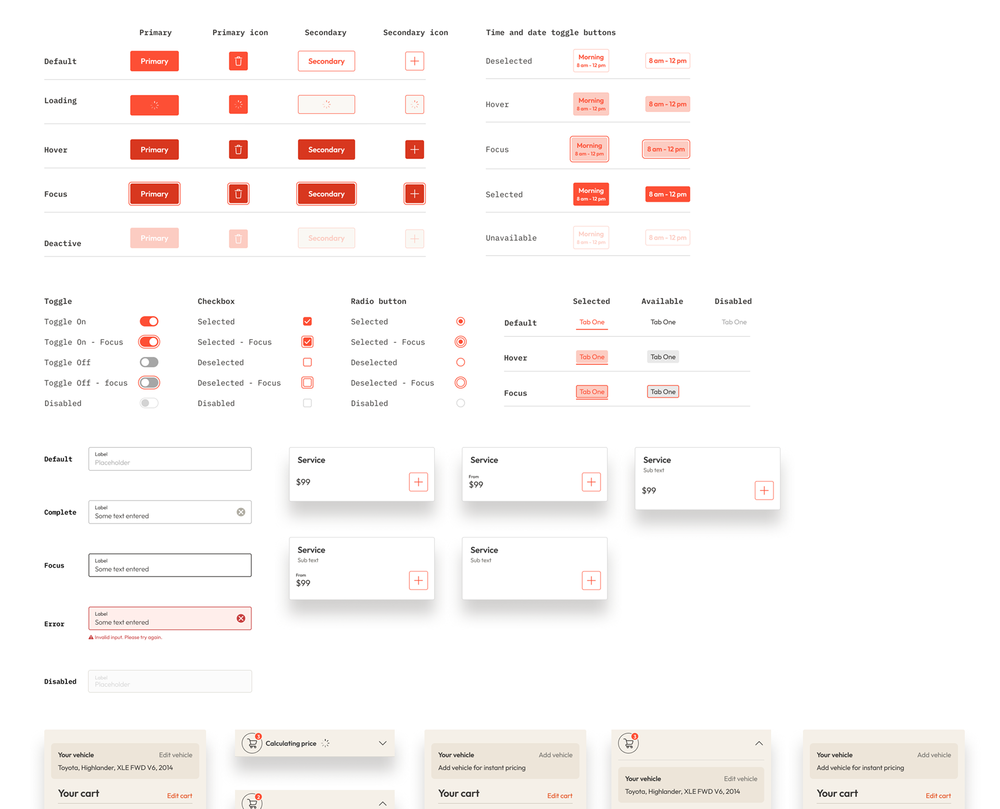
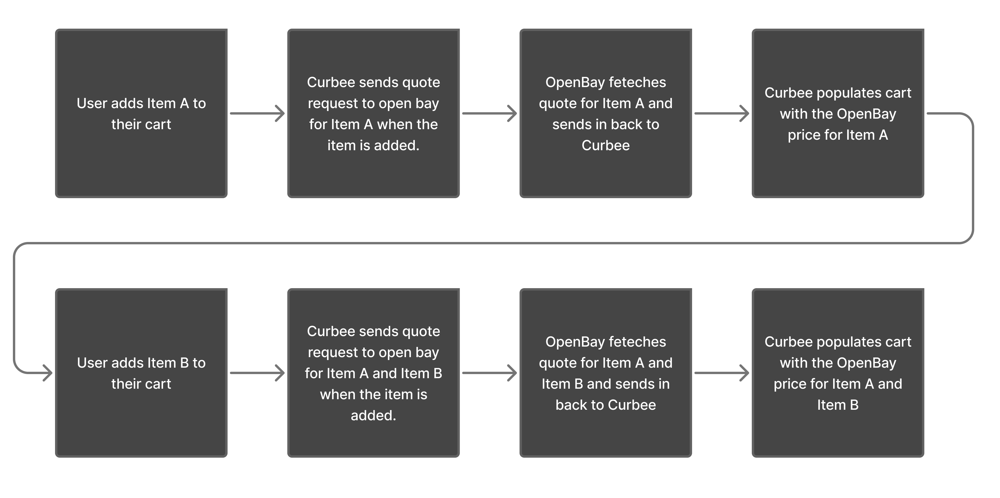
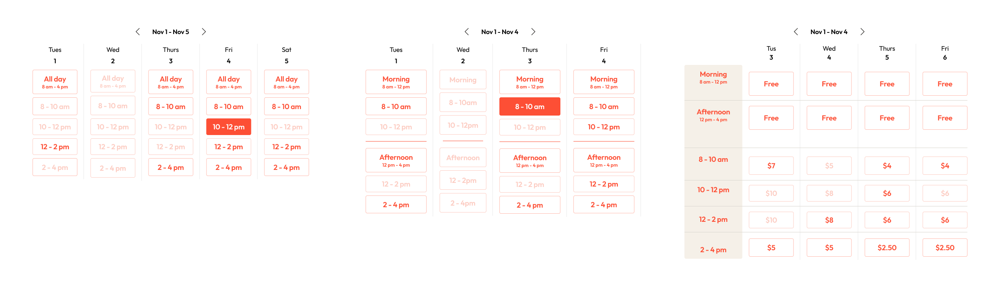

Improving Curbee's checkout conversion to 8%
Curbee is a US mechanic startup. Users book repairs, assessments or washes, and Curbee comes to their home or workplace to carry out the job. The team consisted of two engineers, a PM and myself as a Design Consultant and Product Designer.
The problem
Curbee had good website traffic but low online conversion compared to phone bookings, which were nearly double. This data showed a need for the service and potential to improve their online booking platform.
There were two reasons for the poor online conversion. The booking flow didn't meet basic industry standards. It asked for commitment before earning it, and gave users no meaningful sense of what they were paying before checkout. When users completed a booking online, a customer service agent still had to call them back with a quote because there was no way to generate live pricing within the booking flow.
The result was a checkout experience that didn't convert and operational overhead that made the conversions expensive to handle.
The experience as it stood

Clicking "Book Now" took users straight to an address field
Clicking "Book Now" took users to a page that asked for their address before they could see any services or prices. This was a major barrier for potential customers looking to learn more about the company and its services — it required a significant commitment with no justification for what is a basic expectation: the ability to browse. This made it the largest drop-off point in the flow. The technical reason was that users' locations determined which services were available to them, but users had no way of knowing that.

Services page — "prices vary" with a cart showing $0.00
Those who pushed through reached a services page that did little to build trust. Many items displayed "prices vary" with no explanation of when a final price would be available. The cart showed a running total of $0.00. At no point did users know what they were committing to financially. The reason was technical — parts costs varied by vehicle, so Curbee had no way to generate quotes in real time — but this fact wasn't communicated to the user.

Checkout — card details requested with "Due at Appointment: prices vary"
The checkout screen then asked for contact details and payment information, while the cart summary still read "Due at Appointment: prices vary." Users were asked to enter card details for a service whose cost was still unknown. There were also no trust cues — no accepted payment methods, no mention of the payment provider (Stripe).
On top of this, there was no cohesive design system, so the frontend consisted of bespoke solutions built from basic brand guidelines. This compounded the trust problem. Overall, the flow was structured around operational logic rather than around how someone actually decides to use a service they've never tried before.
How I approached it

Screen shot from FigJam of the flow review.
Understand what exists before deciding what's wrong
I began with a kickoff meeting to clarify project goals, introduce the team, and understand the technical constraints, particularly around the OpenBay integration, a third-party tool that enables Curbee to generate live quotes. Since the engineering team was uncertain about the timeline for this integration, I had to consider improvements in two stages: before live quotes were available, and after.
I examined the user flow on desktop and mobile, documented screens in FigJam, and analysed them from a UX best-practice and heuristic perspective. As this was my first e-commerce project, I spent time understanding checkout optimisation principles, studying competitor strategies, and identifying user expectations, to avoid reinventing the wheel. I noted potential improvements on each page, flagging inconsistencies, broken flows, copy issues, and deviations from best practices, alongside questions for engineers to clarify the rationale behind existing decisions before proposing changes.
Zoom out with the whole team
I ran a session with the PM and engineers to review the findings together. Having the experience mapped as a flow helped the team see the entire journey rather than individual screens. This enabled us to discuss possible changes collectively. With everyone sharing the same understanding and contributing to decision-making, it fostered mutual understanding of each other's goals and the reasons for prioritisation, whether that was business impact or ease of implementation.
The PM initially wanted to wait and release all changes at once. I pushed back on this, but the decision was ultimately made to hold.
Move forward incrementally

Now/next/later plan from the team session
We established a now/next/later plan to organise the work. "Now" was high-confidence changes, experiments to inform future steps, and areas needing investigation — on the technical or product side. "Next" was work that naturally followed or relied on what came first. "Later" was more hypothetical: things that needed to be out of people's heads and on paper, but that might never happen, depending on what we learned.
In practice, "now" included experimenting with copy, fixing inconsistent layouts, and testing the flow order, changes that needed very little design input, which meant engineers could move immediately while I focused on the larger best-practice work. Designing and building simultaneously meant neither side was waiting on the other. The OpenBay integration is a good example: while I was still working through the quote flow design, engineers were already building the underlying connection, and what they discovered about the API's behaviour fed directly back into my design of the interaction.
By the first code review, there was already a meaningful body of completed work sitting unreleased, changes that could already be contributing to conversion or informing what to do next. That shifted the PM's position. Rather than waiting, we started shipping incrementally.
What we changed and why
Remove the barriers to browsing
Users were asked for their address before seeing any services, because location determined which services were available. But as Curbee expanded, only one service category, tyres, was actually location-dependent. Moving the address step later and handling the tyre restriction with a message on the product card removed the biggest early barrier without breaking anything technically. Completion through that part of the flow improved measurably.

Homepage before

Homepage after, now oriented toward new users

Old flow vs. new flow vs. post-OpenBay flow
Once the OpenBay integration was in place, vehicle details became necessary for generating accurate quotes. Rather than hiding this requirement mid-flow, we moved it to the homepage using a pattern common in the automotive industry. The difference from the original address problem is that the ask is now justified: users understand immediately what they're providing their details for and what they'll get in return.
Building a design system

Consolidated design system
The design system work wasn't originally in the brief, but it became necessary quickly. There was no shared system governing how components, spacing, typography, or button hierarchy should work. Each modal had been designed bespoke. Button styles were inconsistent; ghost and solid styles were used interchangeably with no apparent rule. Pricing was formatted differently across the same page. These weren't just cosmetic issues — they were eroding user confidence. Establishing a basic foundation made later changes coherent rather than just a new set of inconsistencies.
Services page before

Services page after
With the design system in place, I worked through the flow against standard e-commerce and checkout best practices. There was no progress indicator, so users had no sense of how many steps remained. The cart wasn't persistently visible or editable. Service selection used checkboxes rather than an add-to-cart interaction, functional, but unusual for a purchasing context where people expect to be building something. Each was a small mismatch with user expectations, and collectively they compounded the trust problems the design system issues had already created.
The services page lost the bullet point noise that was making it hard to scan, fitting more options above the fold and replacing the checkbox interaction with a standard add-to-cart pattern. The cart, now persistent and editable throughout, showed a live price rather than $0.00. The time picker combined address and time slot selection onto a single screen — a more natural mental model that also let users change their location to see different availability. The checkout added trust badges, accepted payment methods, and a clear statement of when payment would actually be taken. None of these were dramatic in isolation. Together they shifted the experience from one that asked users to trust it, to one that gave them reasons to.
Fixing the quote problem

How the OpenBay quote request works in the background
The original plan was for users to add services to their cart, press "Get a Quote," and wait, potentially hours, for a price. This was misaligned with how people shop online. When you add something to a cart, you expect to see a price. "Get a Quote" signals uncertainty at exactly the moment you want users to feel confident.
The technical constraint was OpenBay, a third-party database of car parts and prices. To generate a quote, Curbee had to submit the entire cart rather than pricing items individually. If OpenBay didn't have a part listed, someone on their team manually fetched a price, which could take minutes or hours. There was also a small cost per quote request, which made pulling prices for every individual product card too expensive.
At first glance, this looked like a dead end. But looking at the data on common bookings and how often a manual quote was actually needed, it turned out most requests involved combinations OpenBay had already priced, making the wait an edge case rather than the norm. The solution was to send a quote request to OpenBay automatically whenever a user added an item to their cart, cancelling and resubmitting in the background with each change. Users always saw a live price without triggering anything themselves, and the request costs were negligible compared to the benefit of a checkout that behaved like a normal one.
How we knew it was working

Time picker experiments
The larger changes, the design system and the best-practice work, were grounded in established principles, which gave us confidence in the direction. But within that, we still treated each change as an experiment, implementing them individually so we could see what was actually moving the needle rather than assuming the whole package was working.
Hotjar gave us the ground-level view. Where the data showed churn, we could see exactly why, make a change, confirm people were getting through, and move on to the next page.
The result
Online bookings increased from 2–4% to 8–10%, reducing the dependency on phone bookings and the operational overhead that came with them.
Gallery
Homepage oriented toward new users
Select services: after

Time and date picker: after

Checkout: after